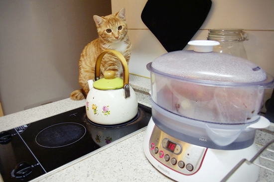
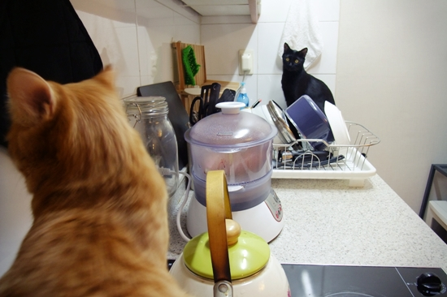
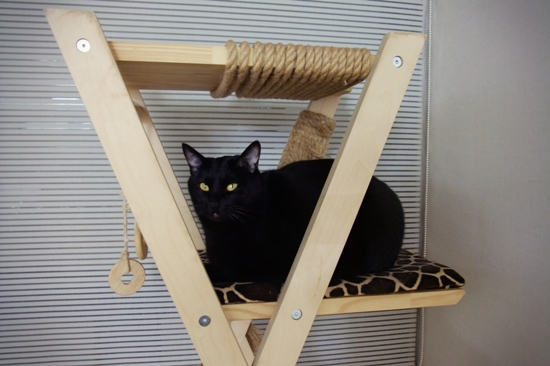
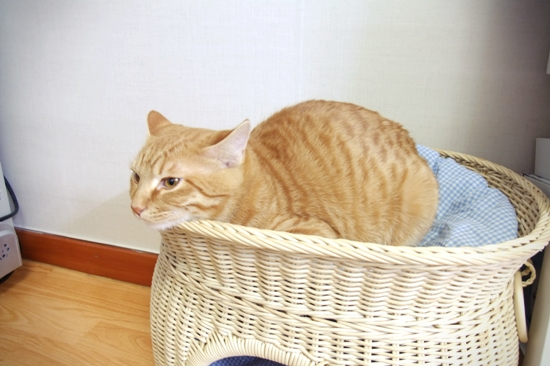
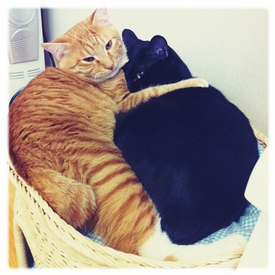

2011-01-26 20:11:53 고구마 먹을 거 발견.라저.하지만, 고구마는 인간의 구황작물.분수 모르고 덥석 물었다간 앞니가 쏙 빠지도록 뜨거운 맛을 보게 될 걸?...어, 근데 찾아보니 고양이들이 고구마 좋아한다고...?몰랐던 척 하지 마.고구마 코스프레를 통해 집사의 고구마 독식에 분노를 표현 중인 망고.잉- 나 하나도 안 주고. (토닥토닥)